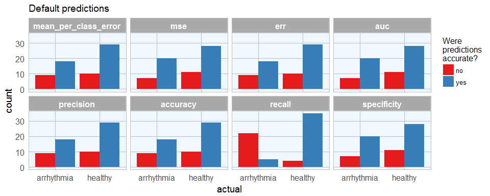
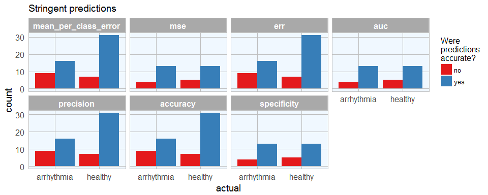

Last week I showed how to build a deep neural network with h2o and rsparkling. As we could see there, it is not trivial to optimize the hyper-parameters for modeling. Hyper-parameter tuning with grid search allows us to test different combinations of hyper-parameters and find one with improved accuracy.
Keep in mind though, that hyper-parameter tuning can only improve the model so much without overfitting. If you can’t achieve sufficient accuracy, the input features might simply not be adequate for the predictions you are trying to model. It might be necessary to go back to the original features and try e.g. feature engineering methods.
Preparing Spark instance and plotting theme
Check out last week’s post for details on how I prepared the data.
library(rsparkling)
options(rsparkling.sparklingwater.version = "2.0.3")
library(h2o)
library(dplyr)
library(sparklyr)
sc <- spark_connect(master = "local", version = "2.0.0")
library(ggplot2)
library(ggrepel)
my_theme <- function(base_size = 12, base_family = "sans"){
theme_minimal(base_size = base_size, base_family = base_family) +
theme(
axis.text = element_text(size = 12),
axis.title = element_text(size = 14),
panel.grid.major = element_line(color = "grey"),
panel.grid.minor = element_blank(),
panel.background = element_rect(fill = "aliceblue"),
strip.background = element_rect(fill = "darkgrey", color = "grey", size = 1),
strip.text = element_text(face = "bold", size = 12, color = "white"),
legend.position = "right",
legend.justification = "top",
panel.border = element_rect(color = "grey", fill = NA, size = 0.5)
)
}
arrhythmia_sc <- copy_to(sc, arrhythmia_subset)
arrhythmia_hf <- as_h2o_frame(sc, arrhythmia_sc, strict_version_check = FALSE)
arrhythmia_hf[, 2] <- h2o.asfactor(arrhythmia_hf[, 2])
arrhythmia_hf[, 3] <- h2o.asfactor(arrhythmia_hf[, 3])
splits <- h2o.splitFrame(arrhythmia_hf,
ratios = c(0.7, 0.15),
seed = 1)
train <- splits[[1]]
valid <- splits[[2]]
test <- splits[[3]]
response <- "diagnosis"
weights <- "weights"
features <- setdiff(colnames(train), c(response, weights, "class"))
Grid Search
We can use the h2o.grid() function to perform a Random Grid Search (RGS). We could also test all possible combinations of parameters with Cartesian Grid or exhaustive search, but RGS is much faster when we have a large number of possible combinations and usually finds sufficiently accurate models.
For RGS, we first define a set of hyper-parameters and search criteria to fine-tune our models. Because there are many hyper-parameters, each with a range of possible values, we want to find an (ideally) optimal combination to maximize our model’s accuracy. We can also specify how long we want to run the grid search for. Based on the results of each model tested in the grid, we can choose the one with the highest accuracy or best performance for the question on hand.
Activation Functions
Rectifier: is the default activation function. It is the fastest and most versatile option. It can lead to instability though and tends to be lower in accuracy.Tanh: The hyperbolic tangent is a scaled and shifted variant of the sigmoid activation function. It can take on values from -1 to 1 and centers around 0. Tanh needs more computational power than e.g. the Rectifier function.-
Maxout: is an activation function that is the max of the inputs. It is computationally quite demanding but can produce high accuracy models. ...WithDropout: When we specifywith dropout, a random subset of the network is trained and the weights of all sub-networks are averaged. It works together with the parameterhidden_dropout_ratios, which controls the amount of layer neurons that are randomly dropped for each hidden layer. Hidden dropout ratios are useful for preventing overfitting on learned features.
Hidden layers
- are the most important hyper-parameter to set for deep neural networks, as they specify how many hidden layers and how many nodes per hidden layer the model should learn
L1 and L2 penalties
L1: lets only strong weights surviveL2: prevents any single weight from getting too big.
Rho and Epsilon
rho: similar to prior weight updatesepsilon: prevents getting stuck in local optima
hyper_params <- list(
activation = c("Rectifier", "Maxout", "Tanh", "RectifierWithDropout", "MaxoutWithDropout", "TanhWithDropout"),
hidden = list(c(5, 5, 5, 5, 5), c(10, 10, 10, 10), c(50, 50, 50), c(100, 100, 100)),
epochs = c(50, 100, 200),
l1 = c(0, 0.00001, 0.0001),
l2 = c(0, 0.00001, 0.0001),
rate = c(0, 01, 0.005, 0.001),
rate_annealing = c(1e-8, 1e-7, 1e-6),
rho = c(0.9, 0.95, 0.99, 0.999),
epsilon = c(1e-10, 1e-8, 1e-6, 1e-4),
momentum_start = c(0, 0.5),
momentum_stable = c(0.99, 0.5, 0),
input_dropout_ratio = c(0, 0.1, 0.2),
max_w2 = c(10, 100, 1000, 3.4028235e+38)
)
Early stopping criteria
stopping_metric: metric that we want to use as stopping criterionstopping_toleranceandstopping_rounds: training stops when the the stopping metric does not improve by the stopping tolerance proportion any more (e.g. by 0.05 or 5%) for the number of consecutive rounds defined by stopping rounds.
search_criteria <- list(strategy = "RandomDiscrete",
max_models = 100,
max_runtime_secs = 900,
stopping_tolerance = 0.001,
stopping_rounds = 15,
seed = 42)
Now, we can train the model with combinations of hyper-parameters from our specified stopping criteria and hyper-parameter grid.
dl_grid <- h2o.grid(algorithm = "deeplearning",
x = features,
y = response,
weights_column = weights,
grid_id = "dl_grid",
training_frame = train,
validation_frame = valid,
nfolds = 25,
fold_assignment = "Stratified",
hyper_params = hyper_params,
search_criteria = search_criteria,
seed = 42
)
We now want to extract the best model from the grid model list. What makes a model the best depends on the question you want to address with it: in some cases, the model with highest AUC is the most suitable, or the one with the lowest mean squared error, etc. See last week’s post again for a more detailed discussion of performance metrics.
For demonstration purposes, I am choosing the best models from a range of possible quality criteria. We first use the h2o.getGrid() function to sort all models by the quality metric we choose (depending on the metric, you want it ordered by descending or ascending values). We can then get the model that’s the first in the list to work with further. This model’s hyper-parameters can be found with best_model@allparameters. You can now work with your best model as with any regular model in h2o (for an example see last week’s post).
# performance metrics where smaller is better -> order with decreasing = FALSE
sort_options_1 <- c("mean_per_class_error", "mse", "err")
for (sort_by_1 in sort_options_1) {
grid <- h2o.getGrid("dl_grid", sort_by = sort_by_1, decreasing = FALSE)
model_ids <- grid@model_ids
best_model <- h2o.getModel(model_ids[[1]])
assign(paste0("best_model_", sort_by_1), best_model)
}
# performance metrics where bigger is better -> order with decreasing = TRUE
sort_options_2 <- c("auc", "precision", "accuracy", "recall", "specificity")
for (sort_by_2 in sort_options_2) {
grid <- h2o.getGrid("dl_grid", sort_by = sort_by_2, decreasing = TRUE)
model_ids <- grid@model_ids
best_model <- h2o.getModel(model_ids[[1]])
assign(paste0("best_model_", sort_by_2), best_model)
}
Let’s plot the mean per class error for each best model:
library(tibble)
sort_options <- c("mean_per_class_error", "mse", "err", "auc", "precision", "accuracy", "recall", "specificity")
for (sort_by in sort_options) {
best_model <- get(paste0("best_model_", sort_by))
errors <- h2o.mean_per_class_error(best_model, train = TRUE, valid = TRUE, xval = TRUE)
errors_df <- data.frame(model_id = best_model@model_id, sort = sort_by, errors) %>%
rownames_to_column(var = "rowname")
if (sort_by == "mean_per_class_error") {
errors_df_comb <- errors_df
} else {
errors_df_comb <- rbind(errors_df_comb, errors_df)
}
}
order <- subset(errors_df_comb, rowname == "xval") %>%
arrange(errors)
errors_df_comb %>%
mutate(sort = factor(sort, levels = order$sort)) %>%
ggplot(aes(x = sort, y = errors, fill = model_id)) +
facet_grid(rowname ~ ., scales = "free") +
geom_bar(stat = "identity", alpha = 0.8) +
scale_fill_brewer(palette = "Set1") +
my_theme() +
theme(axis.text.x = element_text(angle = 45, vjust = 1, hjust=1),
plot.margin = unit(c(0.5, 0, 0, 1), "cm")) +
labs(x = "")

Model performance
The ultimate performance test for our model will be it’s prediction accuracy on the test set it hasn’t seen before. Here, I will compare the AUC and mean squared error for each best model from before. You could of course look at any other quality metric that is most appropriate for your model.
for (sort_by in sort_options) {
best_model <- get(paste0("best_model_", sort_by))
mse_auc_test <- data.frame(model_id = best_model@model_id,
sort = sort_by,
mse = h2o.mse(h2o.performance(best_model, test)),
auc = h2o.auc(h2o.performance(best_model, test)))
if (sort_by == "mean_per_class_error") {
mse_auc_test_comb <- mse_auc_test
} else {
mse_auc_test_comb <- rbind(mse_auc_test_comb, mse_auc_test)
}
}
library(tidyr)
mse_auc_test_comb %>%
gather(x, y, mse:auc) %>%
ggplot(aes(x = sort, y = y, fill = model_id)) +
facet_grid(x ~ ., scales = "free") +
geom_bar(stat = "identity", alpha = 0.8, position = "dodge") +
scale_fill_brewer(palette = "Set1") +
my_theme() +
theme(axis.text.x = element_text(angle = 45, vjust = 1, hjust=1),
plot.margin = unit(c(0.5, 0, 0, 1.5), "cm")) +
labs(x = "", y = "value", fill = "")

I will then create a dataframe with predictions for each test sample with all best models. As in last week’s post, I want to compare the default predictions with stringent predictions.
for (sort_by in sort_options) {
best_model <- get(paste0("best_model_", sort_by))
finalRf_predictions <- data.frame(model_id = rep(best_model@model_id, nrow(test)),
sort = rep(sort_by, nrow(test)),
class = as.vector(test$class),
actual = as.vector(test$diagnosis),
as.data.frame(h2o.predict(object = best_model, newdata = test)))
finalRf_predictions$accurate <- ifelse(finalRf_predictions$actual == finalRf_predictions$predict, "yes", "no")
finalRf_predictions$predict_stringent <- ifelse(finalRf_predictions$arrhythmia > 0.8, "arrhythmia",
ifelse(finalRf_predictions$healthy > 0.8, "healthy", "uncertain"))
finalRf_predictions$accurate_stringent <- ifelse(finalRf_predictions$actual == finalRf_predictions$predict_stringent, "yes",
ifelse(finalRf_predictions$predict_stringent == "uncertain", "na", "no"))
if (sort_by == "mean_per_class_error") {
finalRf_predictions_comb <- finalRf_predictions
} else {
finalRf_predictions_comb <- rbind(finalRf_predictions_comb, finalRf_predictions)
}
}
To get a better overview, I am going to plot the predictions (default and stringent):
finalRf_predictions_comb %>%
ggplot(aes(x = actual, fill = accurate)) +
geom_bar(position = "dodge") +
scale_fill_brewer(palette = "Set1") +
my_theme() +
facet_wrap(~ sort, ncol = 4) +
labs(fill = "Were\npredictions\naccurate?",
title = "Default predictions")

finalRf_predictions_comb %>%
subset(accurate_stringent != "na") %>%
ggplot(aes(x = actual, fill = accurate_stringent)) +
geom_bar(position = "dodge") +
scale_fill_brewer(palette = "Set1") +
my_theme() +
facet_wrap(~ sort, ncol = 4) +
labs(fill = "Were\npredictions\naccurate?",
title = "Stringent predictions")

With predictions made by different models, we can see where each model performs best. This obviously corresponds with the quality metric we chose to define the best model. Stringent prediction thresholds reduced the number of false predictions but of course also the number of predictions made at all.
We can now decide which model is most relevant. Let’s say, we want this model to give recommendations for further validating a diagnosis of arrhythmia, we might want to detect as many arrhythmia cases as possible, while being okay with also getting some erroneously diagnosed healthy subjects. In this case, the people could flag patients with likely arrhythmia for further testing. Here, this would mean that we wanted to minimize the number of wrong predictions of arrhythmia cases, so we would prefer the mse, auc and specificity model (which is the same model, chosen by all three qualitry metrics). The worst model for this purpose would be the recall model, which also did not make any predictions that passed the stringency threshold. The recall model would have been best if we wanted to be confident that healthy people get flagged correctly. However, in a real-life setting, you can imagine that it would be much worse if a sick patient got sent home because he was wrongly diagnosed as healthy than if a healthy person got submitted to further testing for possible arrhythmia.
If you are interested in more machine learning posts, check out the category listing for machine_learning.
## R version 3.3.2 (2016-10-31)
## Platform: x86_64-w64-mingw32/x64 (64-bit)
## Running under: Windows 7 x64 (build 7601) Service Pack 1
##
## locale:
## [1] LC_COLLATE=English_United States.1252
## [2] LC_CTYPE=English_United States.1252
## [3] LC_MONETARY=English_United States.1252
## [4] LC_NUMERIC=C
## [5] LC_TIME=English_United States.1252
##
## attached base packages:
## [1] stats graphics grDevices utils datasets methods base
##
## other attached packages:
## [1] tidyr_0.6.1 tibble_1.2 ggrepel_0.6.5
## [4] ggplot2_2.2.1.9000 sparklyr_0.5.3-9002 dplyr_0.5.0
## [7] h2o_3.10.3.6 rsparkling_0.1.0
##
## loaded via a namespace (and not attached):
## [1] Rcpp_0.12.9 RColorBrewer_1.1-2 plyr_1.8.4
## [4] bitops_1.0-6 base64enc_0.1-3 tools_3.3.2
## [7] digest_0.6.12 jsonlite_1.2 evaluate_0.10
## [10] gtable_0.2.0 shiny_1.0.0 DBI_0.5-1
## [13] rstudioapi_0.6 yaml_2.1.14 parallel_3.3.2
## [16] withr_1.0.2 httr_1.2.1 stringr_1.2.0
## [19] knitr_1.15.1 rappdirs_0.3.1 rprojroot_1.2
## [22] grid_3.3.2 R6_2.2.0 rmarkdown_1.3
## [25] reshape2_1.4.2 magrittr_1.5 backports_1.0.5
## [28] scales_0.4.1 htmltools_0.3.5 assertthat_0.1
## [31] mime_0.5 xtable_1.8-2 colorspace_1.3-2
## [34] httpuv_1.3.3 labeling_0.3 config_0.2
## [37] stringi_1.1.2 RCurl_1.95-4.8 lazyeval_0.2.0
## [40] munsell_0.4.3